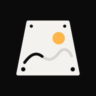
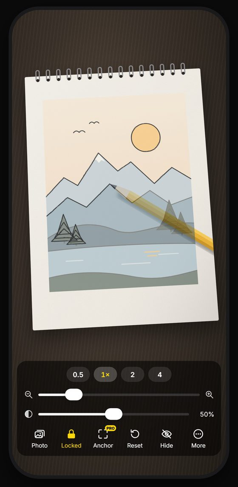
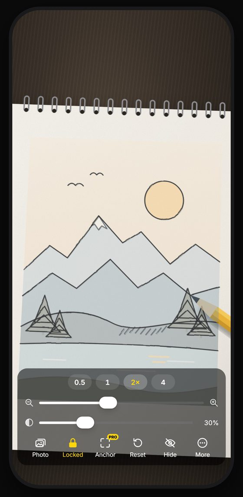
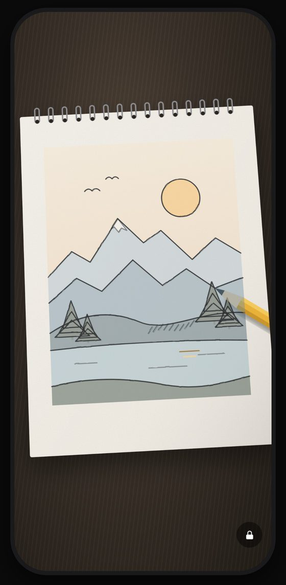
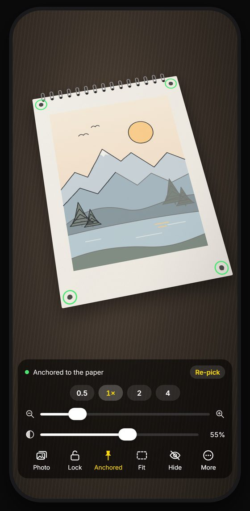

PaperOverlay
PaperOverlay shows your paper through the iPhone camera, with any photo on top at the transparency you choose. Mount the phone above your sketchbook and trace what you see.
PaperOverlay affiche votre feuille à travers la caméra de l’iPhone, avec la photo de votre choix par-dessus, à la transparence que vous voulez. Placez le téléphone au-dessus de votre carnet et tracez ce que vous voyez.
PaperOverlay hiện tờ giấy của bạn qua camera iPhone, với bất kỳ tấm ảnh nào phủ lên trên ở độ trong suốt bạn chọn. Đặt điện thoại phía trên cuốn sổ vẽ và đồ theo những gì bạn thấy.

Trace any photo onto paperDécalquez n’importe quelle photoĐồ lại bất kỳ tấm ảnh nào lên giấy
Your page through the camera, your picture on top, your pencil visible through both.Votre feuille à travers la caméra, votre image par-dessus, et votre crayon visible à travers les deux.Trang giấy qua camera, ảnh nằm trên, và cây bút chì vẫn thấy rõ xuyên qua cả hai.
Your picture on your pageVotre image sur votre feuilleẢnh nằm ngay trên trang giấy
Pick any photo, then drag, pinch and turn it into place. Apple’s photo picker gives the app only that picture.
Choisissez une photo, puis faites-la glisser, pincez et tournez-la pour la placer. Le sélecteur de photos d’Apple ne donne à l’app que cette image.
Chọn một tấm ảnh rồi kéo, chụm và xoay cho vào đúng chỗ. Trình chọn ảnh của Apple chỉ đưa cho ứng dụng đúng tấm ảnh đó.

Show just enoughJuste ce qu’il fautHiện vừa đủ
Set the transparency, zoom from 0.5× like the Camera app, and lock the picture in place.
Réglez la transparence, zoomez dès 0,5× comme dans l’app Appareil photo, et verrouillez l’image.
Chỉnh độ trong suốt, zoom từ 0.5× như ứng dụng Camera, rồi khóa ảnh tại chỗ.

Hide the controlsMasquez les commandesẨn bảng điều khiển
A clean screen that stays awake while you trace.
Un écran dégagé qui reste allumé pendant que vous tracez.
Màn hình gọn gàng, không tự tắt trong lúc bạn đồ.

Pinned to your pageFixée à votre feuilleGhim chặt vào trang giấy
With Anchor mode (Pro), the picture follows the sketchbook when it moves.
Avec le mode Anchor (Pro), l’image suit le carnet quand il bouge.
Với chế độ Anchor (Pro), ảnh bám theo cuốn sổ khi nó xê dịch.
More tools for your drawing, and no ads.
Plus d’outils pour dessiner, et sans publicité.
Thêm công cụ để vẽ, và không quảng cáo.
Anchor modeMode AnchorChế độ Anchor
Draw a dot near each corner of your page and tap the four dots once. The picture then stays on your drawing when the phone, the zoom or the sketchbook moves.
Dessinez un point près de chaque coin de la feuille et touchez une fois les quatre points. L’image reste alors sur votre dessin quand le téléphone, le zoom ou le carnet bouge.
Chấm một điểm gần mỗi góc trang giấy rồi chạm vào bốn điểm đó một lần. Từ đó ảnh nằm yên trên bản vẽ dù điện thoại, mức zoom hay cuốn sổ có xê dịch.
Outline
Turns any picture into clean lines to trace, with simplify, detail and line weight sliders. It’s made on your iPhone.
Transforme n’importe quelle image en traits nets à décalquer, avec des curseurs de simplification, de détail et d’épaisseur. Le tout est calculé sur votre iPhone.
Biến bất kỳ bức ảnh nào thành nét vẽ gọn gàng để đồ theo, với thanh chỉnh độ đơn giản, chi tiết và độ dày nét. Mọi thứ được xử lý ngay trên iPhone.
Pen track
A spotlight follows your pencil tip, and the lines you’ve drawn show above the picture. Apple’s on-device hand detection finds the tip; nothing leaves your iPhone.
Un halo suit la pointe de votre crayon, et les traits que vous avez dessinés apparaissent par-dessus l’image. La détection de la main d’Apple, sur l’appareil, trouve la pointe ; rien ne quitte votre iPhone.
Một vầng sáng bám theo đầu bút chì, và những nét bạn đã vẽ hiện lên trên bức ảnh. Tính năng nhận diện bàn tay của Apple chạy ngay trên máy để tìm đầu bút; không gì rời khỏi iPhone.
Focus lockVerrouillage de la mise au pointKhóa lấy nét
Long-press the paper to lock focus and exposure, or set the focus by hand, so the page stays sharp when your hand moves over it.
Appuyez longuement sur la feuille pour verrouiller la mise au point et l’exposition, ou réglez la mise au point à la main : la page reste nette quand votre main passe dessus.
Nhấn giữ lên tờ giấy để khóa lấy nét và độ sáng, hoặc tự chỉnh lấy nét bằng tay, để trang giấy luôn rõ khi tay bạn lướt qua.
No adsSans publicitéKhông quảng cáo
Without Pro, an ad can appear at a pause, at most every three minutes, never while you trace. Pro removes them.
Sans Pro, une publicité peut apparaître lors d’une pause, au plus toutes les trois minutes, jamais pendant que vous tracez. Pro les supprime.
Không có Pro, quảng cáo có thể hiện lúc bạn tạm dừng, tối đa ba phút một lần, không bao giờ khi bạn đang đồ. Pro tắt hết quảng cáo.
Monthly or yearlyMensuel ou annuelTheo tháng hoặc theo năm
In France, Pro costs €0.99 a month or €10 a year; the App Store shows the price where you live. Cancel anytime in your Apple Account settings.
En France, Pro coûte 0,99 € par mois ou 10 € par an ; l’App Store affiche le prix de votre pays. Résiliable à tout moment dans les réglages de votre compte Apple.
Ở Pháp, Pro có giá 0,99 € mỗi tháng hoặc 10 € mỗi năm; App Store hiển thị giá ở nơi bạn sống. Hủy bất cứ lúc nào trong phần cài đặt Tài khoản Apple.
The detailsLes détailsThông tin
- Works onAppareilsThiết bị
- iPhone with iOS 17 or lateriPhone sous iOS 17 ou plus récentiPhone chạy iOS 17 trở lên
- You needIl vous fautCần có
- A stand or tripod that holds the iPhone above the paper, camera downUn support ou un trépied qui tient l’iPhone au-dessus de la feuille, caméra vers le basGiá đỡ hoặc chân máy giữ iPhone phía trên tờ giấy, camera hướng xuống
- LanguageLangueNgôn ngữ
- EnglishAnglaisTiếng Anh
- PricePrixGiá
- Free, with ads at pauses. PaperOverlay Pro, monthly or yearly, adds the Pro tools and removes the ads.Gratuit, avec des publicités lors des pauses. PaperOverlay Pro, mensuel ou annuel, ajoute les outils Pro et supprime les publicités.Miễn phí, có quảng cáo lúc tạm dừng. PaperOverlay Pro, theo tháng hoặc theo năm, thêm các công cụ Pro và tắt quảng cáo.
- PrivacyConfidentialitéQuyền riêng tư
- The camera picture and your photos stay on your iPhone. No account. L’image de la caméra et vos photos restent sur votre iPhone. Pas de compte. Hình ảnh camera và ảnh của bạn ở lại trên iPhone. Không cần tài khoản. Privacy policyPolitique de confidentialitéChính sách quyền riêng tư
- PublisherÉditeurNhà phát hành
- Duy BUI · HyperClaire